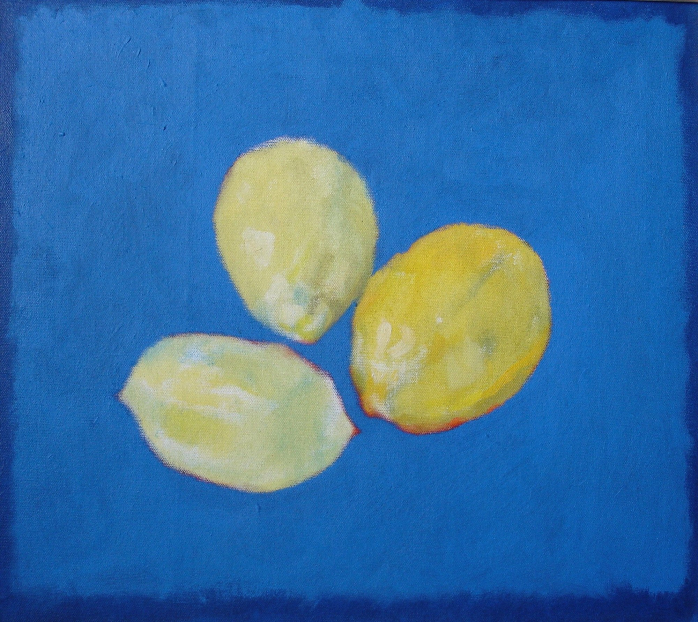

Kevin sources his lemons from a neighbour's garden in Kew. The same tree, season after season, yielding fruit that becomes painting after painting. This constancy of source allows him to focus entirely on chromatic relationships, compositional arrangements, the play of warm yellow against cool blue, the subtle modulations of lemon yellow to cadmium to pale cream.
The lemon is chromatically perfect—a warm, high-value form that can be placed against virtually any ground. Its elliptical shape offers geometric simplicity while its organic irregularity prevents mechanical repetition. Each lemon is the same subject and yet utterly different.
"The lemon never lies. It just sits there, being yellow."

Three lemons on cerulean blue ground — note the chromatic temperature contrast and the soft halation where warm yellows meet cool atmospheric blue
In this work, three lemons float against a vibrant cerulean field. The composition achieves weightlessness—the fruits suspended rather than resting. Each lemon displays subtle chromatic variation: pale lemon yellow, deeper cadmium yellow, with a reddish accent edge on the lower fruit. The halation around each form creates a gentle glow where pigments meet, a chromatic event that Kevin has studied across hundreds of painting sessions.
Kevin Lemon represents one modality within the Oxford Scholar Artists collective—the focused, repetitive, devotional approach to a single subject. While other personalities in the collective range across philosophical territories and diverse materials, Kevin has found his territory in the lemon and refuses to leave it. This is not limitation but liberation: the freedom that comes from accepting constraint, the depth that emerges from sustained attention to one thing done again and again.